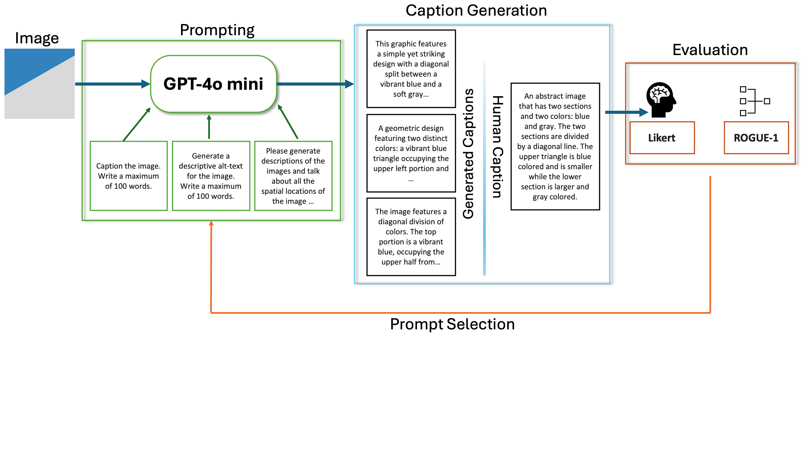

Not all images are worth a thousand words!
Fall 2024 CSCI 5541 NLP: Class Project - University of Minnesota
Visual Linguists

Hardik Gupta
Hardik Gupta
Human memory for abstract visuals is notably poorer than for real-world scenes. We investigated whether this discrepancy stems from the difficulty in verbally labeling abstract content. We utilize a set of abstract images that vary in their complexities and human memory performance on those images to test our hypothesis. Using LLMs to generate captions for these abstract images of varying complexity, we found that caption complexity mirrored visual complexity. We built several simple models to predict human memory performance on abstract images and found that a predictive model based on the generated captions' semantic content performed competitively to a model relying solely on visual features. This study suggests that our ability to verbalize and name what we are seeing might indeed underpin our ability to remember a visual scene.
A figure that conveys the schematic diagram behind the project or the main application being addressed. This figure is from StyLEx.

What did you try to do? What problem did you try to solve? Articulate your objectives using absolutely no jargon.
Basically trying to see if visual scenes may be represented linguistically when stored in human memory or are imagined back. We wanted to find out why some pictures are harder to remember than others. Specifically, we asked if pictures that are more abstract and difficult to describe in words are also harder to memorize. Our goal was to see if there's a link between how complex an image is and how challenging it is to remember it.
How is it done today, and what are the limits of current practice?
It involves generating captions for abstract images and no LLM model to our knowledge is tailored for it. Most psychological and neuroscience experiments use synthetic, non-natural images so obtaining any semantic information on them is impossible as the computational models don't focus on them. As such this involves careful prompt engineering to use existing LLMs to generate captions for non-natural images.
Who cares? If you are successful, what difference will it make?
Psychologists and neuroscientists, specifically computational neuroscientists and perception researchers as this can provide an novel way to understand the interplay between visual memory and our thoughts which are linguistic. It can also benefit VLM research in the computer science community,.
What did you do exactly? How did you solve the problem? Why did you think it would be successful? Is anything new in your approach?
We input the abstract images into GPT with various prompts (e.g., "Describe the image in detail"). For each image, we obtained captions like "A complex interplay of swirling colors and shapes forming an abstract pattern." We evaluated these captions using Likert scales and ROUGE-1 scores, selecting prompts that produced captions closest to human descriptions.
What problems did you anticipate? What problems did you encounter? Did the very first thing you tried work?
No modern LLM handles non-natural and synthetic data well for image captioning. As a result even careful prompt enginnering cannot generate very well defined captions, that captures what a human would look for. As a result we had to use human evaluations with reference annotations for it. Automatic evaluations like ROGUE scores compare similarities between a reference text and a generated text. However, since this is a visual task, a human generated Likert score would be able to understand how well the captions describe the visual image. As a result human intervation was necessary. The prompt enginenring took multiple tries.
How did you measure success? What experiments were used? What were the results, both quantitative and qualitative? Did you succeed? Did you fail? Why?
Recent work has shown that as image complexity increases, human memory performance declines for abstract images

A UMAP (Uniform Manifold Approximation and Projection) of the captions of select group of images was used to cluster captions generated for abstract images by their caption complexity. The UMAP demonstrates clear separation among captions based on their associated image complexities. This separation indicates that the captions, reflect underlying patterns of image complexity that humans intuitively perceive
We also compared the performance of models predicting memory performance using different semantic complexity metrics. A K-Fold cross-validation approach was employed to rigorously compare a semantic memorability model (based on a linear combination of perplexity and concreteness) with a purely visual complexity model. Remarkably, the semantic model proved competitive with the visual complexity model, underscoring the importance of semantic factors in determining memorability.
Overall, the results strongly support the idea that se- mantic descriptions aid visual memory. They reveal a robust connection between image complexity, se- mantic representation, and memory performance, shedding light on why natural scenes are easier to remember than abstract ones. The implications of this study extend to areas such as AI-driven image captioning, memory training, and understanding the cognitive basis of visual and semantic integra- tion. In this study, we quantitatively analyzed hu- man visual memory performance through semantic means by leveraging metrics such as perplexity and concreteness. These metrics serve as proxies for the difficulty of generating semantic descriptions, revealing that abstract images with higher visual complexity lack clear semantic cues, leading to in- creased memory recall errors. This supports the hypothesis that humans rely on both visual and semantic representations to encode and retrieve memories, with the absence of semantic anchors in abstract images impairing memory performance. Our UMAP analysis demonstrated that captions for less complex images cluster tightly, reflecting straightforward semantic structures, while captions for more complex images are dispersed, indicating greater variability and difficulty in interpretation. This suggests that semantic properties are closely tied to visual complexity, offering new insights into how image semantics influence cognitive pro- cesses.